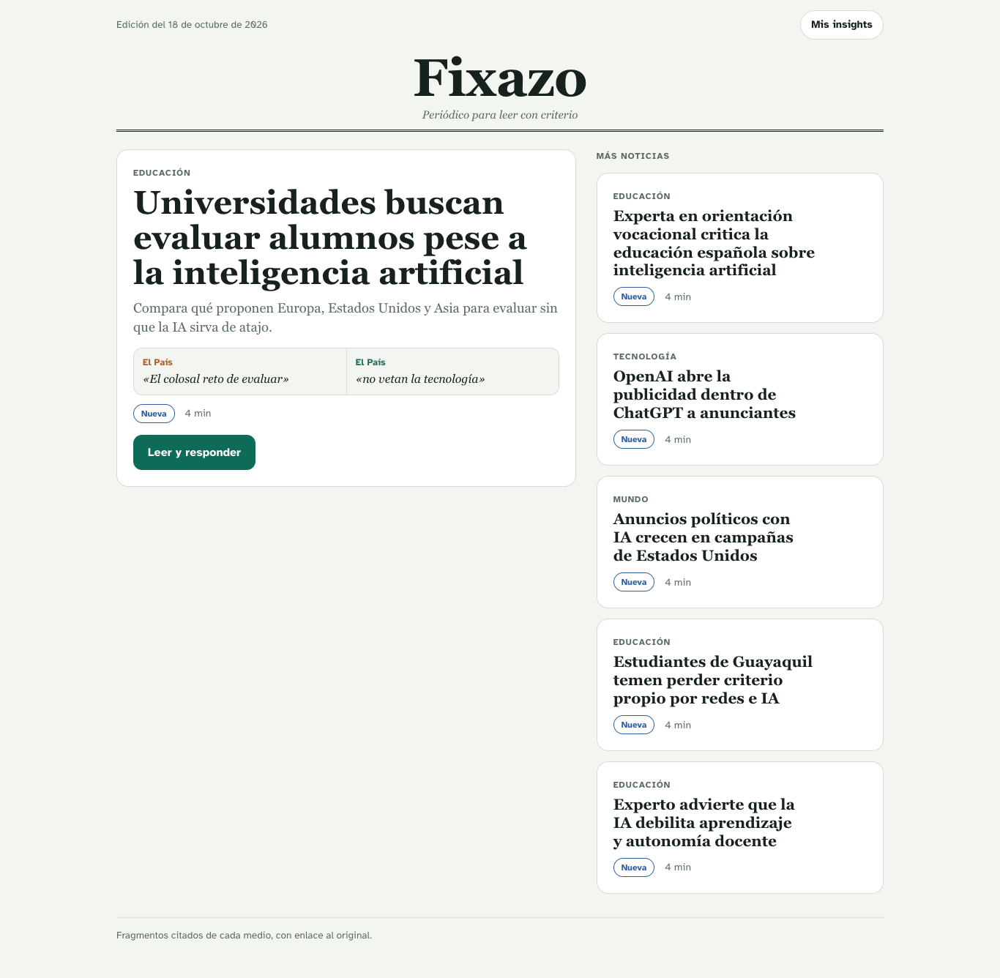
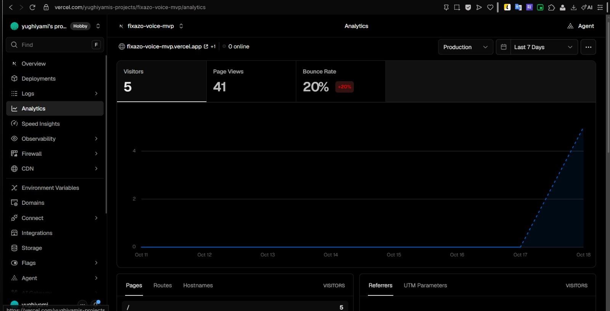
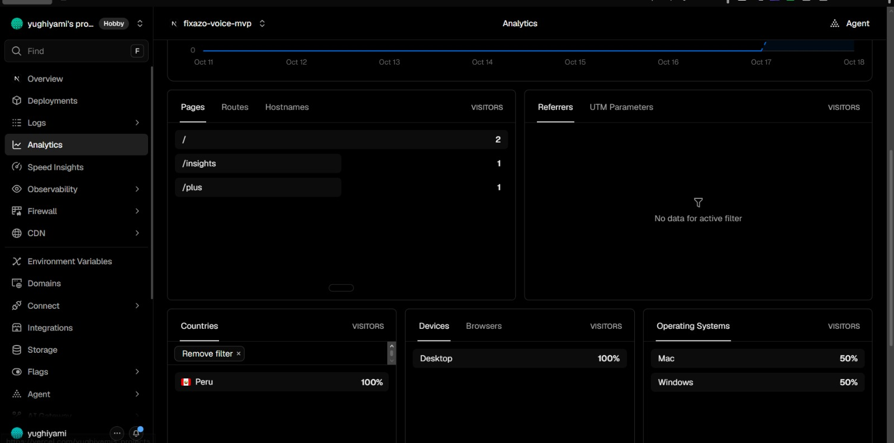

Un periódico para jóvenes que convierte cada noticia en práctica de pensamiento crítico.
Mateo Rodríguez · Omar Roca · Daniel Marron
La termina. Pero no aprende.
Idea de Yuval Noah Harari, 21 lecciones para el siglo XXI, capítulo sobre la educación (resumen, no cita textual).
No te dice qué creer. Te enseña a preguntar quién lo dice y por qué lo cuenta así.

US$ 0,05 a 0,09 por noticia · 644 pruebas automáticas · un solo modelo: Claude Haiku 5.5

18 oct. 2026 · 9:07 a. m.
18 oct. 2026 · 9:07 a. m.Que antes de creerle a una IA, a un medio o a cualquiera, se pregunte quién lo dice y por qué lo cuenta así.
Fixazo